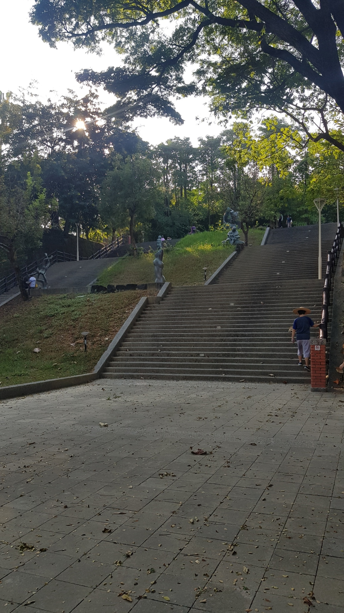

秋冬旅遊補助
9-12月最高省2000
旗山神社
日治時期於今高雄縣旗山鎮(原名蕃薯藔，大正9(1920)年改稱旗山)建有旗山神社(根據昭和18(1943)年由臺灣總督府文教局社會課編印的《臺灣に於ける神社及宗教》記載，旗山神社於昭和11(1936)年10月30日鎮座，無格社，祭神為開拓三神(大國魂命、大己貴命、少彥名命)、安德天皇(水の神、安産の神)、北白川宮能久親王，例祭日為每年的11月10日)，而旗山神社境內並設有一座供奉稻荷神的末社(根據昭和12(1937)年4月28日的《台灣日日新報》的報導，旗山神社末社旗山稻荷社於昭和12(1937)年10月24日鎮座)，旗山神社原址位於今旗山公園內(而旗山公園原稱鼓山公園，於明治37(1904)年4月開園，現入口階梯右側留存有立於大正元(1911)年8月的「鼓山公園記碑」 )，公園還保有一對造型為中國南方式石獅的原神社狛犬(圖片可參考Mainasu的相簿神社石獅(狛犬)部份)及若干石燈籠殘件，不過當日因停留時間過於短暫而未能見到。
相關資訊
電話
無
地址
842高雄市旗山區永福街55巷
開放時間
08:30–17:00
票價資訊
免費